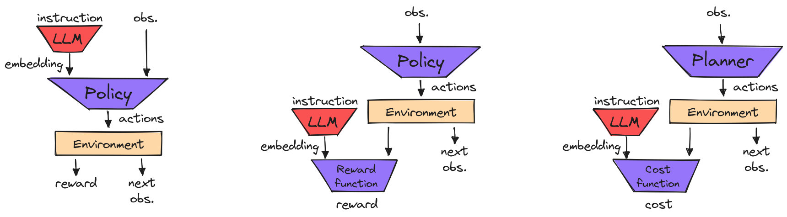
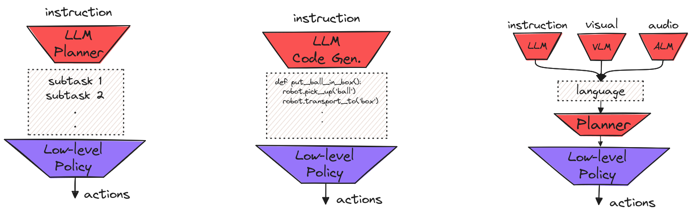
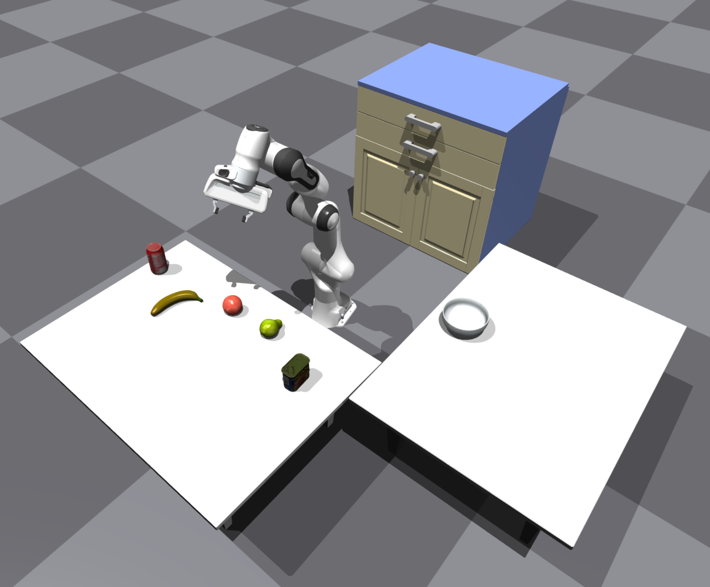

Large Language Models for Robotic Manipulation
This project was developed as part of the PhD course in Deep Structured Machine Learning. The purpose of the project was to write a review paper on recent methods employing large language models for robotic manipulation. You can find the full review here. In this post, I will briefly discuss the different approaches and showcase a simple implementation of one of the discussed methods. The project was completed in the spring semester of 2023, since then, new approaches have been proposed that are not discussed here.
Introduction#
The recent advancements in large language models (LLMs) have propagated in many fields from virtual assistants to physical robots. The integration of LLMs with robotic agents promises to yield robots capable of planning and executing complex tasks that can operate in unstructured environments. There are several advantages to using LLMs in the context of robotics: 1) having robots that can understand natural language instructions would allow humans to interact with robots more intuitively, 2) pre-trained LLMs can leverage the vast amounts of data available online to encode knowledge of multiple instances for which gathering robotic data would be impossible, and 3) using the emergent abilities of LLMs, such as few-shot prompting and chain-of-thought reasoning, robotic agents can potentially adapt to new environments and tasks more easily than traditional robotic systems. Below we will discuss some recent approaches to using LLMs in robotic manipulation scenarios and present a case study for planning.
Language in Robotic Manipulation #
We can identify two central approaches to using language in robotic manipulation: 1) language-conditioned approaches (Luketina et al. 2019) and 2) approaches that use language as middleware (Andy Zeng and Jacky Liang, 2022). Language-conditioned approaches, as their name implies condition some component of the method on an instruction. For example, in reinforcement learning the policy can be conditioned on a language command, or in planning scenarios the planner. In general, in language-conditioned methods, the language command is pre-processed by a pre-trained LLM, and the output embedding is used as input to some part of the low-level action generation method, be it an RL policy or a planner. These methods are primarily utilized for executing simple tasks from natural language instructions that do not require complex task planning. On the other hand, several approaches use language and LLMs in an intermediate step during the planning process. For example, they leverage the reasoning abilities of LLMs to break down complex high-level tasks in sequences of easy-to-execute subtasks, they use LLMs to directly generate code that a low-level policy can execute, or they use language as a communication layer, to transfer information between multimodal LMs. In this case, more complex tasks can be performed that require high-level planning.
Language Conditioned Control#
In this case, natural language is used to specify the target task that the agent needs to perform. Task specification is a fundamental problem in robotic manipulation and human-robot interaction. Using natural language to specify tasks provides an intuitive way for humans to communicate with robots and can facilitate human-robot collaboration.

Policy conditioning.
The dominant approach in language-conditioned control
is to directly condition the action generation policy
on a natural language instruction
(Brohan et al. 2022,
Stepputtis et al. 2020). Typically, the
instruction is tokenized and an embedding is extracted
using a pre-trained LLM. Models that are pre-trained
on large amounts of data enable the agent to disambiguate
synonyms in instructions and handle instructions in
multiple languages (Lynch and Sermanet, 2020).
The policies, are usually trained in a supervised fashion,
e.g. using imitation learning,
on recorded trajectories of the robot performing a task along
with the corresponding instruction in natural language.
Usually, the data are gathered by users teleoperating the robot
(Lynch et al. 2022).
Additional data augmentation techniques can be applied to learn
more robust representations (Shridhar et al. 2021).
Reward conditioning.
Another approach, instead of directly using the language
instruction to condition the policy, is to train a
language-conditioned reward function (Nair et al. 2021). A multi-task policy
can then be trained with reinforcement learning
using this reward function. In a similar fashion to policy
conditioning approaches the language instruction is fed
into a pre-trained LLM and the embedding is then given to the
reward network.
Feedback conditioning.
Finally, language instructions can be incorporated into the
agent's planning loop, and be used as feedback to correct the
behavior of the robot online (Sharma et al. 2022). In this case,
the embedding, extracted from the instruction, can be used to
generate cost functions for the planner (Sharma et al. 2022)
or to generate additional planning constraints to improve
the robot's trajectory (Cui et al. 2023).
Language as Middleware #
Another way to leverage LLMs in robotic manipulation agents is to incorporate them into an internal stage of the planning process. The main approaches include: (1) using LLMs for high-level task planning, where the LLM must decompose the task at hand into a step-by-step plan that involves skills that the robot can execute using low-level control policies (Huang et al. 2022a, Ahn et al. 2022), (2) using LLMs for code generation, i.e. the LLM's role is to generate software code that will be directly executed by the robot to perform the designated task (Liang et al. 2022, Singh et al. 2023), and (3) integration of multimodal language models, in this case, language serves as a means for various LMs to interact and exchange information, facilitating communication among different components of the system (Driess et al. 2023). This approach enables agents to perform more complex and long-horizon tasks that require planning and reasoning capabilities.

High-level Planning.
The main idea, is that LLMs that are trained on massive
amounts of general data have been shown to contain enough
internalized world knowledge on how to perform diverse
high-level tasks and can generalize to unseen ones
(Brown et al. 2020).
Basically, the agent is presented with a task, given in the
form of an instruction expressed in natural language, and is
asked to translate it into a detailed plan, i.e. sequence of
subtasks, that the robot can execute to accomplish the goal
(Ahn et al. 2022).
Typically, given the high-level instruction an input prompt
is designed to make the LLM produce a detailed plan of actions
that need to be completed to perform the task by exploiting
the chain-of-thought reasoning scheme or few-shot prompting
(Wake et al. 2023).
Several aspects need to be determined for this approach to
work. For example how to constrain the LLM to output sub-tasks
that the robotic agent can perform (Huang et al. 2022b), or how to match the output
of the LLM with a specific sub-policy.
Additionally, several works have developed closed-loop
approaches for planning with LLMs, in which the LLM is prompted
with errors that the agent might encounter during the execution.
By doing so, they use feedback from the environment and
from human interaction to re-plan the action sequences and
correct its behavior (Raman et al. 2022).
Code generation.
Instead of prompting the LLM to generate a plan in natural
language, we can also instruct it to explicitly generate the
software code needed for the agent to perform a given task.
For example by including few-shot examples in the prompt
that contain instructions and the corresponding code
(Liang et al. 2023). This
way the LLM can take advantage of algorithmic structures
such as for-loops and if-statements to produce more efficient
and successful plans (Singh et al. 2023).
Language model integration.
Finally, language can be used as a communication API between
several multimodal language models, such as visual LMs (VLMs),
audio LMs (ALMs), etc. This can be achieved through prompting,
i.e. using natural language to transfer information from one
model to the other, such as the visible objects or the sounds
that can be detected etc (Zeng et al. 2022). Additionally, another option is to use
end-to-end multimodal LMs that use both text and images to
complete embodied decision-making tasks (Driess et al. 2023).
Discussion#
Using language to instruct robots offers a more intuitive way for
task specification allowing non-expert operators, such as the elderly,
to interact with robots. Additionally, the robustness of LLMs to
synonyms in instructions and their ability to handle multilingual
commands broadens the use cases of this approach. However,
language-conditioned control has several limitations. Most methods
rely on a supervised training scheme (e.g. imitation learning) that
requires large and well-balanced datasets, labeled with language
instructions that can include only a fixed set of objects and tasks.
As a consequence, these methods do not generalize well to
out-of-distribution situations and are hard to scale.
Agents that use language in an intermediate layer for planning
and reasoning are able to handle high-level complex instructions.
However, these approaches inherit the limitations of LLMs, including
their biases and dependencies. For instance, LLMs commonly suffer
from hallucinations, which in this case can cause the planners to
suggest skills that are not available in the robot’s skill set. On
top of that, the range of available low-level skills that the robot
can perform significantly constraints the number of high-level tasks
that can be successfully executed. Finally, these models continue to
struggle with instructions that are substantially more complex
than the few-show examples that are presented in the prompts.
Integrating pre-trained LLMs with robotic agents has helped address
many challenging problems in robotic manipulation but has also complicated
their societal impact. LLMs are trained on massive datasets containing
human-generated data collected from the internet that are hard to reason
about. Additionally, their black-box nature, as in most deep learning
models, offers little explainability over the way their outputs are
generated. This can potentially introduce biases in the agent’s behavior
that are present in the LLM’s dataset. Moreover, the misalignment of the
training objective of most LLMs, which is some form of self-supervised
objective, like predicting missing words without accounting for their
meaning, and their actual purpose, which is to operate in human-centered
environments and interact with humans creates important risks. In general,
there are several intangible risks associated with the use of
pre-trained LLMs that are magnified when these models are coupled with
robotic agents that can act in real-world environments. In addition,
several practical vulnerabilities have been identified that make LLM
potential attack targets by malicious parties, such as adversarial
user inputs (Perez and Ribeiro, 2022),
where the operator of the robot can manipulate the LLM to exhibit
undesired behavior, and indirect prompt injection
(Greshake et al. 2023).
Case Study#
As a case study for the project, we implemented an LLM enabled robotic agent in a simulated environment based on the Code-as-Policies method. We developed our environment in the IsaacGym simulator, and we we used the Panda arm 7DoF manipulator equipped with a parallel gripper. The environment contains two tables, a cabinet, and a few household objects from the YCB and Google scanned objects datasets. The full code along with the prompts can be found in this repository.

To control the robot to perform basic manipulation primitives we developed an API that includes basic actions such as grasping an object, opening the drawer, etc. The low-level actions, i.e. the joint angle positions that the agent needs to execute an action primitive, e.g. picking up an object, are calculated using the inverse kinematics of the manipulator, while the grasp poses for the various objects are predefined. The agent is presented with the following prompt that includes instructions and example code to execute them:
##### Write a Python function for a robot to execute the instruction given in the comment
## Put the ball in the box
items = ['ball']
places = ['box']
def put_ball_in_box():
box_pos = robot.get_object_pos('box')
robot.put_first_on_second('ball', box_pos)
put_ball_in_box()
## Put the cube in the drawer
items = ['ball', 'cube']
places = ['box', 'drawer']
def put_cube_and_ball_in_drawer():
robot.open_drawer()
drawer_pos = robot.get_object_pos('drawer')
robot.put_first_on_second('cube', drawer_pos)
robot.put_first_on_second('ball', drawer_pos)
robot.close_drawer()
put_cube_and_ball_in_drawer()
## Put the cube next to the sphere
items = ['ball', 'cube']
places = ['box', 'drawer']
def put_cube_next_to_ball():
ball_pos = robot.get_object_pos('ball')
target_pos = ball_pos + np.array([0., 0.1, 0.])
robot.put_first_on_second('cube', target_pos)
put_cube_next_to_ball()
## Put the cube in front of the sphere
items = ['ball', 'cube']
places = ['box', 'drawer']
def put_cube_front_of_ball():
ball_pos = robot.get_object_pos('ball')
target_pos = ball_pos + np.array([0.15, 0., 0.])
robot.put_first_on_second('cube', target_pos)
put_cube_front_of_ball()
## Put the ball right of the cube
items = ['ball', 'cube']
places = ['box', 'drawer']
def put_cube_and_ball_in_drawer():
cube_pos = robot.get_object_pos('cube')
target_pos = cube_pos + np.array([0.0, 0.15, 0.])
robot.put_first_on_second('ball', target_pos)
put_ball_right_of_cube()
## Put the first three items in the drawer
items = ['ball', 'cube_1', 'cube_2', 'cylinder_1', 'cylinder_2']
places = ['box', 'drawer']
def put_first_three_items_in_drawer():
robot.open_drawer()
drawer_pos = robot.get_object_pos('drawer')
for i in range(3):
robot.put_first_on_second(item[i], drawer_pos)
robot.close_drawer()
put_first_three_items_in_drawer()
## Put the all cubes in the drawer
items = ['ball', 'cube_1', 'cube_2', 'cylinder_1', 'cylinder_2']
places = ['box', 'drawer']
def put_all_cubes_in_drawer():
robot.open_drawer()
drawer_pos = robot.get_object_pos('drawer')
for item in ['cube_1', 'cube_2']:
robot.put_first_on_second(item, drawer_pos)
robot.close_drawer()
put_all_cubes_in_drawer()
## INSTRUCTION
items = ['banana', 'pear', 'coke_can', 'meat_can', 'orange']
places = ["coke_can", "pear", "banana", "meat_can", "orange", "bowl", "drawer", "table_1", "table_2"]
We assume that the agent has access to a list of the available
objects and locations (e.g. the drawer) in the scene as well as
their 3D positions. We used the
text-davinci-003
from OpenAI to
generate Python code. The instruction was inserted as a comment
in the final line of the prompts and the output of the model was
directly executed by the agent. The agent can follow simple
instructions such as:

The agent is also able to follow more complex instructions
that require reasoning about the objects, such as:
def put_all_fruits_in_bowl(): bowl_pos = robot.get_object_pos('bowl') for item in ['banana', 'pear', 'orange']: robot.put_first_on_second(item, bowl_pos) put_all_fruits_in_bowl()
The execution of this code can be seen bellow.

References#
[1] Luketina et al. "A Survey of Reinforcement Learning Informed by Natural Language." ArXiv, 2019.[2] Andy Zeng and Jacky Liang. "Language as robot middleware" Youtube, 2022.
[3] Lynch, Corey and Pierre Sermanet. “Language Conditioned Imitation Learning Over Unstructured Data.” RSS, 2020.
[4] Stepputtis et al. “Language-Conditioned Imitation Learning for Robot Manipulation Tasks.” ArXiv, 2020.
[5] Lynch et al. “Interactive Language: Talking to Robots in Real Time.” ArXiv, 2022.
[6] Brohan et al. “RT-1: Robotics Transformer for Real-World Control at Scale.” ArXiv, 2022.
[7] Shridhar et al. “CLIPort: What and Where Pathways for Robotic Manipulation.” ArXiv, 2021
[8] Nair et al. “Learning Language-Conditioned Robot Behavior from Offline Data and Crowd-Sourced Annotation.” CoRL, 2021.
[9] Sharma et al. “Correcting Robot Plans with Natural Language Feedback.” ArXiv, 2022.
[10] Cui et al. “No, to the Right: Online Language Corrections for Robotic Manipulation via Shared Autonomy.” HRI, 2023.
[11] Huang et al. “Inner Monologue: Embodied Reasoning through Planning with Language Models.” CoRL, 2022a.
[12] Wake et al. “ChatGPT Empowered Long-Step Robot Control in Various Environments: A Case Application.” IEEE Access, 2023.
[13] Ahn et al. “Do As I Can, Not As I Say: Grounding Language in Robotic Affordances.” CoRL, 2022.
[14] Huang et al. “Language Models as Zero-Shot Planners: Extracting Actionable Knowledge for Embodied Agents.” ArXiv, 2022b.
[15] Raman et al. “CAPE: Corrective Actions from Precondition Errors using Large Language Models.” ArXiv, 2022.
[16] Liang et al. “Code as Policies: Language Model Programs for Embodied Control.” ICRA, 2023.
[17] Singh et al. “ProgPrompt: Generating Situated Robot Task Plans using Large Language Models.” ICRA, 2023.
[18] Driess et al. "Palm-e: An embodied multimodal language model." ArXiv, 2023.
[19] Brown et al. “Language Models are Few-Shot Learners.” ArXiv, 2020.
[20] Zeng et al. “Socratic Models: Composing Zero-Shot Multimodal Reasoning with Language.” ArXiv, 2022.
[21] Perez and Ribeiro. “Ignore Previous Prompt: Attack Techniques For Language Models.” ArXiv, 2022.
[22] Greshake et al. “Not What You've Signed Up For: Compromising Real-World LLM-Integrated Applications with Indirect Prompt Injection.” ACM Workshop on Artificial Intelligence and Security, 2023.